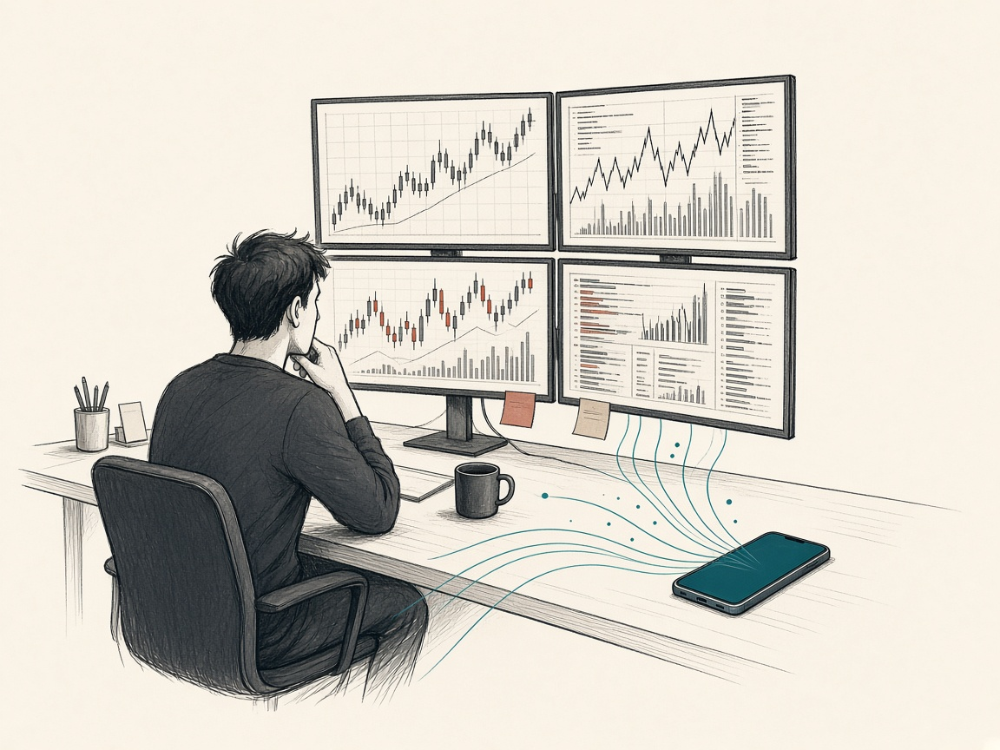
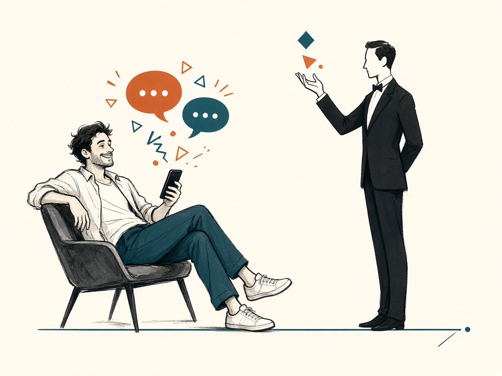

There is no doubt that professional money is already moved by machines. Around 80% of US equity volume has been algorithmic since 2009. Hedge funds and trading desks do not sit around tapping buttons; they run systematic models and bots around the clock. Yet for normal retail people trading stocks, crypto, or forex on the side, almost every dollar still moves because a human finger pressed a screen. If humans aren't writing code by hand anymore, we can't imagine a future where we're still moving money by tapping through apps one trade at a time.
Context & historical speed: Even 1% flatters today's reality: almost all of it is legacy robos and a small circle of bots (scheduled 401(k)s and recurring savings are excluded on both sides; the chart measures who presses the button, not who had the idea). Real AI agents are practically zero (~0.5% of Robinhood's funded customers, holding ~$1,000 each). Once the better interface arrives, gaps like this close in years, not decades: online trading went from 17% of US retail stock trades in 1997 to 48% by 1999 (a year after Merrill Lynch's brokerage head publicly called it "a serious threat to Americans' financial health"), and Wall Street's own shift to algorithms jumped from under 20% in 2003 to over 70% by 2009. Full workings in refs 1–3.
So what does AI money actually look like for a normal salaried guy trading on the side? Watch a week in Ken's life (36, day job, two kids, $30,000 of play money).
And this shift pulls in both ends of retail, not just one niche.

A pro setup, without the setup
Four monitors, spreadsheets, price alerts, and Python scripts taped together to keep up with institutions that never sleep. That cockpit is already a hand-built agent; a real agent puts it in his pocket without him babysitting it.

A butler, all on one phone
Lives in group chats on one phone and just wants dopamine and fun. He does not want a desktop cockpit or a lecture; he wants one app that turns any crazy idea into an immediate trade and remembers the stop-loss he always forgets.
People ask why this happens now when trading bots have been around for twenty years. The answer is simple: human nature is lazy and wants instant convenience in a 24/7 market where everything is tradeable, yet for twenty years anything conditional or multi-step required coding, which locked out 98% of normal people. LLM coding just took that cost to zero. Plain English is now working code, with monitoring and execution attached. Combine lazy humans, infinite 24/7 markets, and free LLM coding, and there is no world where retail money stays manual.
Of course, a more intelligent model alone will not take retail from 1% to 80%. AI fundamentally hallucinates sometimes, while moving money has to be exact. Today, no normal person is going to put $10,000 or $50,000 into an agent just because a prompt tells it to be careful. Before real money crosses over, three concrete pieces have to be built underneath.
First, deterministic trust primitives, execution, and reputation. Limits have to be enforced below the model itself: allowed assets, max per trade, daily caps, monthly loss floors, a kill switch, and a cooldown to raise limits while lowering them is instant, so Saturday-night impulses cannot override Sunday-afternoon rules. The model should plan and write custom code for backtests or triggers, then hand execution to boring, exact rails that never double-fire, cap slippage, and unwind cleanly if step three of four fails. Standing conditional instructions also need cheap 24/7 monitoring (small models watching, heavier models deciding) so the economics work on a $200 trade, plus verifiable track records and leaderboards so trust compounds socially instead of forcing users to babysit every single click. Getting Ken from a $1,000 test balance to $10,000 is the whole game.
Second, permissionless venues where agents can express any idea freely. Traditional finance forces an agent to pretend to be a human logging into eleven separate apps with eleven API keys, isolated sub-accounts, whitelists, and permissions a broker can pull anytime. Even with major brokers opening agent doors this year, every broker is still a walled garden that decides which assets you can touch and what your agent is allowed to do. Onchain removes the human login wall completely and unlocks max composability. Every venue is a smart contract, every asset is a token, and an agent can express any idea freely, swapping from A to B to C to D, bridging, depositing, and hedging across assets, all from one wallet with your spending limits written straight into the account itself. As more of the world's money and assets move onchain, agents stop fighting walled gardens and start treating the entire market as one open surface.
Third, and most importantly, a product simple enough that a lazy human will actually use it. Everything above can easily turn into a complicated dashboard with forty settings, and if you build that, only the same 2% of bot traders will ever touch it. The other 98% do not want strategy builders, API keys, or "bring your own model." They want one app, one chat, say what you want once, confirm the boundaries, and let it run. Put the advanced knobs behind a door the serious trader can open, and keep the front door effortless.
Institutions crossed from human hands to software fifteen years ago and never looked back. Retail is standing at the exact same edge today, at 1%, with every barrier finally falling. Once the deterministic trust layer, permissionless rails, and effortless front door are in place, moving money by tapping screens with our fingers will look as outdated as writing code by hand. Slowly, and then very quickly, AI will move all of it.
P.S. We hardcore believe onchain is the right base layer for AI money. No human logins, max composability, limits enforced in code. Onchain is inevitable.